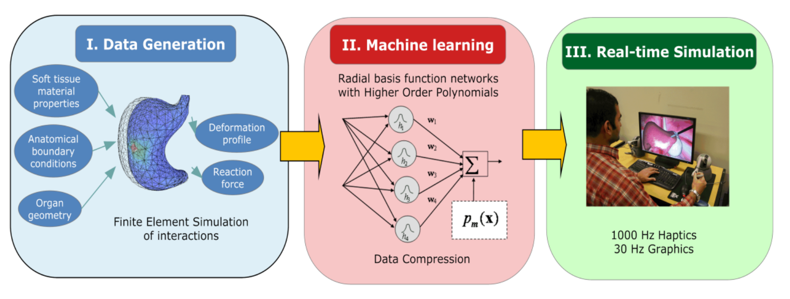
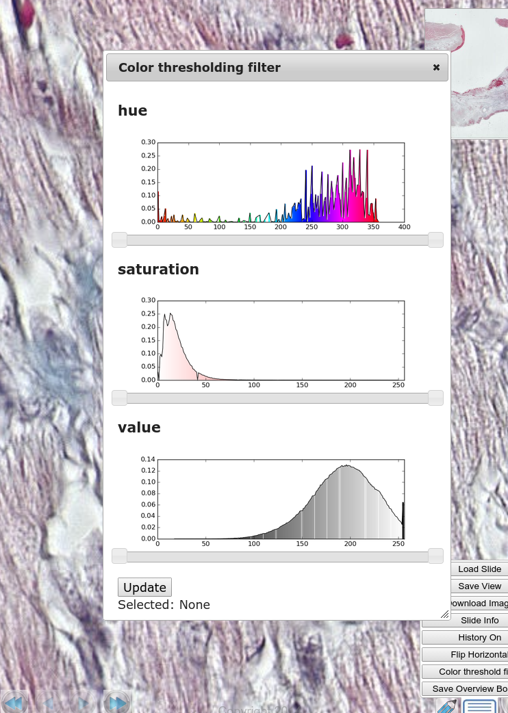

Djay for 
18 November 2016
###For interview team members
- David Boissy (Control Design Automation)
- Mike Carvill (Human Resources)
- Kunal Kadakia (Control Design Automation)
- Gagan Mahan (Control Design Automation)
- George Quievryn (Control Design Automation)
- TODO: Add last minute additions
###About me
- Dhanannjay Deo (धनंजय देव)
- mailto:dhandeo@gmail.com
- https://github.com/dhandeo
- https://www.linkedin.com/in/dhandeo
- https://twitter.com/dhandeo
###Outline
- About us
- My background
- Education
- Notable projects
- Digital SlideAtlas
- Digital SlideAtlas in detail
- Features
- Challenges
- Image streaming
- Server
###About this Presentation
- Built with [reveal.js](http://lab.hakim.se/reveal-js/#/)
- Hosted at [dhandeo.github.io](https://dhandeo.github.io/djay_for_mathworks/#/)
###Why web
- Always wanted a hands on experience
- Like the nested slide layout
- Good for interactive demos over web (no alt+tab)
- Easy support over all smart devices
Master of Science (faculty of engineering)
Doctor of Philosophy (Mechanical engineering)
Digital SlideAtlas
 ###Aladdin GENIE
###Aladdin GENIE

Visual Recognition of Objects in image

Digital Surgery Simulation
###Outside work hours
- Tinkering with raspbery pi
- Endurance cycling
- 3d modeling and animation
- DIY Furniture design
###Challenges
- Large image size (1gb compressed, often )
## Features
- An open-source, web-based microscopy image platform
- Automated upload and pre-processing, directly from slide scanners
- Interactive high-performance viewing on desktop and mobile devices
- Archiving, access control, and voice search features
- Annotation tools
- 3D stack creation and viewing
### Multiresolution image streaming
- What to store and What to compute
- jpeg2000 vs image pyramid
Locating the image tile

## Cutting the corners
- Jpeg quantization tables
- Websockets
- Prefetching
- Lower resolution tiles first
- For smooth navigation
###Developer setup
- Docker container with all dependencies
- Dummy database or map ports to production database
### Production setup
- MongoDB cluster (Replica set)
- sqlite for plugin data
- GlusterFS for remote synced file systems
- git hookes to restart server on push
### Sustainance
- Pingdom
- check_mk or nagios
- Backup
- File system backup
- MongoDB does not support hot backup
- Slave node backup
### Education
- Targeting medical schools, residency training, continuing education
- Features for selective hiding of annotations, quiz mode, and full-screen presentation creation
- Remote and collaborative viewing
### Research
- Supporting image processing algorithms, and very large datasets
- Consulting
- Automatic batch upload of images
### Blocking vs non-blocking io
- Serve multiple users simultaneously
- Monkey patching python standard library for
### Memory mapped files
- Map files in virtual memory and access data directly instead of file io system calls
- Efficient access for large files
- Easy to share large file resources across processes
### LRU Cache
- Map files in virtual memory and access data directly instead of file io system calls
- Efficient access for large files
- Easy to share large file resources across processes
### On client side component in javascript
- Creates button(s) and registers callbacks
- User actions
- Identify image region(s)
- Select the parameters for operation
- Submit the task to server
- Long poll / websockets to wait and fetch
- Control how vector and raster overlays are displayed
### On server side component in javascript
- Web server accepts an analysis request
- Submit the analysis task to a job queue
- Queue assembles the image as specified
- Runs analysis
- Compile results
- Results returned when requested by client
- Book keeping
Analysis color thresholding

###Profiling and automated tests

### Performance tests
- Selenium to complete user interaction for a particular configuration
- Reports statistics (response time, latency etc)
### Unit tests
Internal API tests, also useful to demonstrate usage
### Smoke test
Selenium to complete user interaction
### Latest/Future considerations
- Portable embeddeble module
- WebGL rendering of selected overlays
- Use of memory maps for TIFF readers
- ZeroMQ connected server and image tile serving microservices
### Summary
- Diverse skillsets
- End-to-end agile development
- Creative prototypes
Questions, Comments, Advisements ?